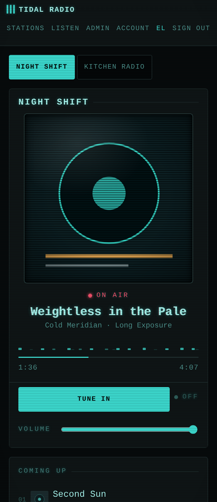

tidal-radio
node liquidsoap icecast sqlite docker websocket
A self-hosted, multi-station live radio. People link a Tidal playlist, point a station at an artist, or submit individual songs — each station downloads the audio into one shared library and streams a fair-shuffle rotation continuously, live, as its own Icecast mount. A station can also be defined by genre instead of a link, drawing from whatever's already in the library. Running in production with five stations and a 450-track library, plus a 15,000+ file local collection indexed and matched on demand.

how it works
Tidal is only ever used as a catalogue and a source of files — a submitted track is downloaded once into the shared library and played from there, never streamed live from Tidal itself. Sync only ever flows one way in: linking a playlist to a station can never write back to it, by construction, because there's no code path that lets it. Playback itself works as a pull, not a push: the streaming engine (Liquidsoap) asks the app for the next track over a small internal API, the app's rotation logic picks one, and Liquidsoap reports back what actually went on air — which is also what pushes the "on air" state out to listeners' browsers over a live WebSocket connection.
Underneath that sits an auto-DJ pass that runs on every file once, when it arrives, rather than while it's playing. Loudness is measured properly (integrated LUFS, the same standard broadcast uses) and turned into one fixed gain per track, capped so it can never clip. Dead air at the start and end of a file is detected and trimmed — over 95% of the library was carrying trailing silence, which meant crossfades used to start inside the silence rather than the song. Crossfades themselves use a curve chosen specifically so the overlap doesn't dip in volume in the middle, which is what makes a fade sound like a hole. Track selection also prefers whatever follows the last song well in tempo and loudness, without ever letting that preference stop a track from getting its turn. A station stops pulling audio the moment nobody's listening and picks back up the instant someone tunes in — the stream itself never goes down, so there's always something to tune into.
built with
The app is a Node.js server with no build step, storing everything in SQLite. Four Docker containers make up the full stack: the app itself, Liquidsoap (which pulls each station's rotation and pushes it to air), Icecast (one stream mount per station), and Caddy for TLS and routing. Loudness analysis runs through ffmpeg, and beat-grid measurement through aubio. The whole thing is covered by 24 self-contained test suites and 773 assertions, run as plain Node scripts rather than a test framework, each one named after the specific bug it was written to catch.
self-hosted, running on the home network — not publicly reachable